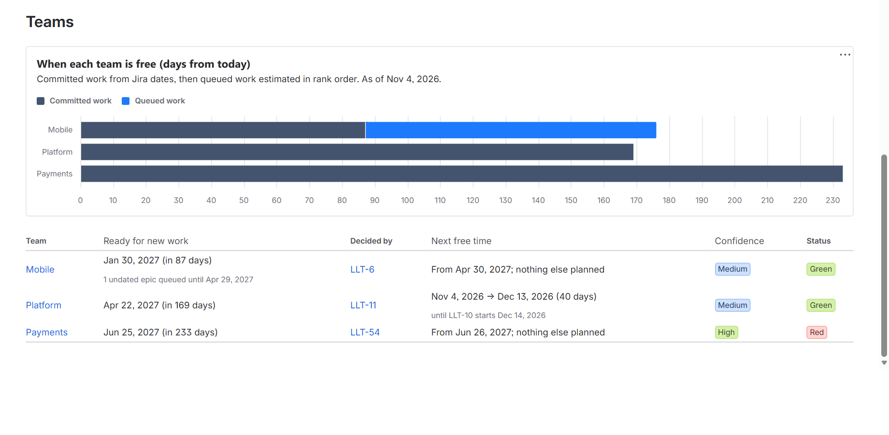
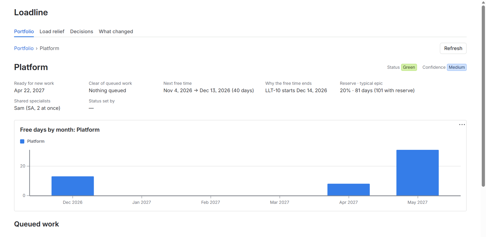
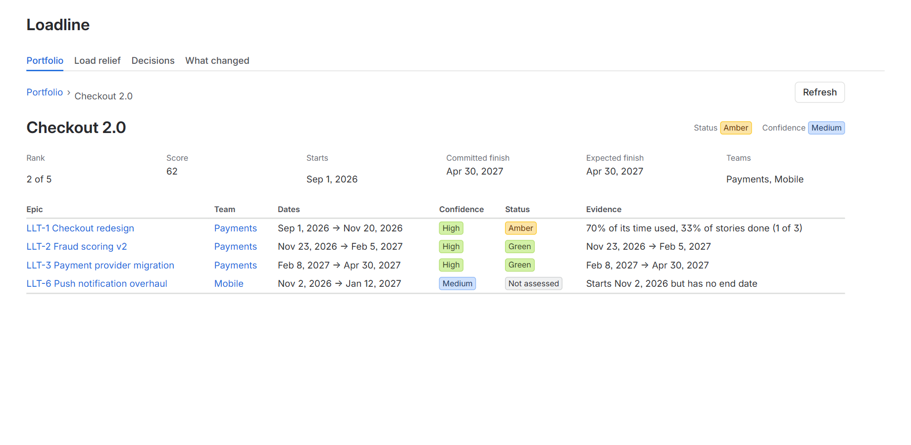

loadline™ · for Jira Cloud
When can each team start new work?
Loadline answers from the epics, dates and teams already in Jira. Every date comes with its confidence and the issue that decides it.

A team's start date is only useful if you can see why. Loadline shows the epic, the dates and the confidence behind every one.
What you get
Three answers, each with its evidence
Start dates you can defend
Loadline works out when each team finishes its committed work, allowing for unplanned work, and dates what comes next in rank order. Each date shows how sure it is and why.
Status with evidence
Red, amber and green come with the dates and epics behind them, including the work that blocks an epic. Progress counts the way your teams work: stories with credit for sub-tasks done, story points or hours. Work Loadline can't judge is marked Not assessed, never quietly green.
Rank, then record why
Projects are ranked by an adjustable priority score. The ranking decision log keeps each decision, its rationale and a snapshot of capacity, with named approvers.
Example data from a test site
See it in Jira






Inside Loadline
| Where | What it shows |
|---|---|
| Portfolio page | Projects ranked by priority score, with expected finish, confidence and status. Drill into any project or team; each team shows how long its undated epics would keep it busy. |
| Load relief | Which teams free up, and by how many days a month, after a milestone or Jira release, plus changes that would relieve bottlenecks. |
| Shared specialists | When a shared role, such as a solution architect or product owner, is what delays a start, not the team. |
| Decisions | The ranking decision log: proposed, accepted or rejected, with notes and follow-through. |
| Watch out | Epics blocked by work expected to finish after they start, read from Jira's "Blocks" links: they turn amber, or red when the blocker can't finish before the epic is due. Also end dates that moved later this week, and work started before its start date, with a link to fix it in Jira. Loadline never moves your dates. |
| What changed | A daily feed of moved dates and status or confidence changes, kept for 90 days. Each move names its cause, such as an edited date or an epic that moved to another team or project. |
| Epic panel | Loadline's answer on every epic in Jira: expected dates, confidence, status and what holds it up. |
| Rovo agent | Ask "When could Mobile take on new work?" or try a what-if in Rovo chat. Admins decide whether it may draft decisions. |
Security
Built to be trusted with your plan
Runs on Atlassian
Loadline runs on Atlassian Forge and keeps its data in Atlassian-hosted storage. No data leaves Atlassian.
Read-only towards Jira
Loadline reads your work and never changes your issues. What-if scenarios are never saved.
Permission-aware
People see only work in Jira projects they can browse, on every page and in Rovo.
Beyond Jira
Loadline starts with Jira, and we plan to bring it to more of the tools your teams use, so portfolios that span tools can be planned in one place.
Pricing
About $2 per user per month, with lower per-user rates for larger sites. Free for sites with up to 10 users. Every site can start with a free trial through the Atlassian Marketplace, where final prices will be listed.